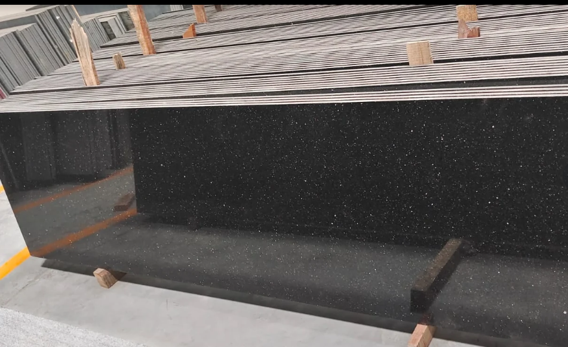
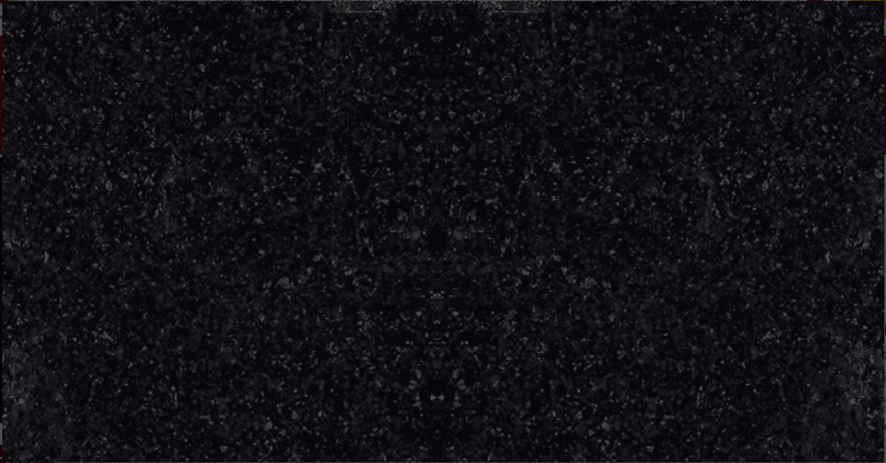
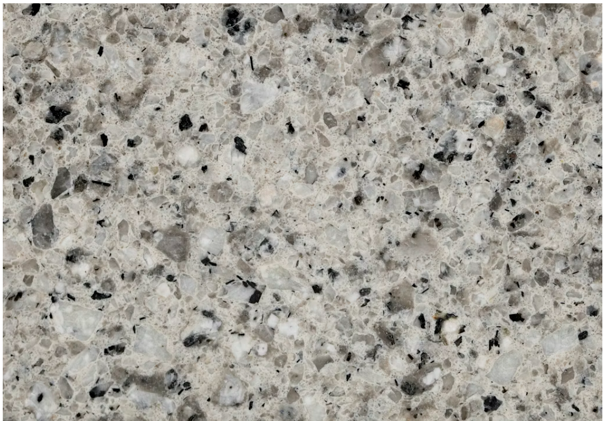
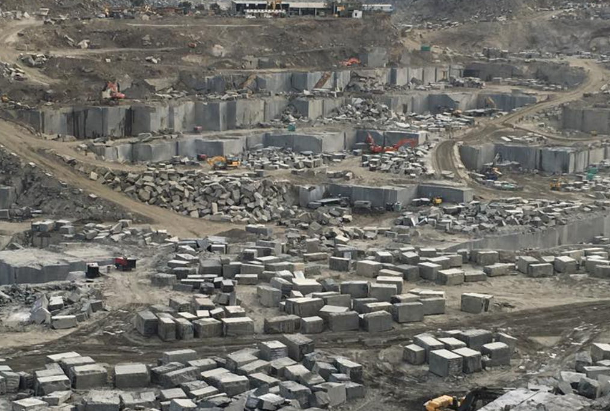
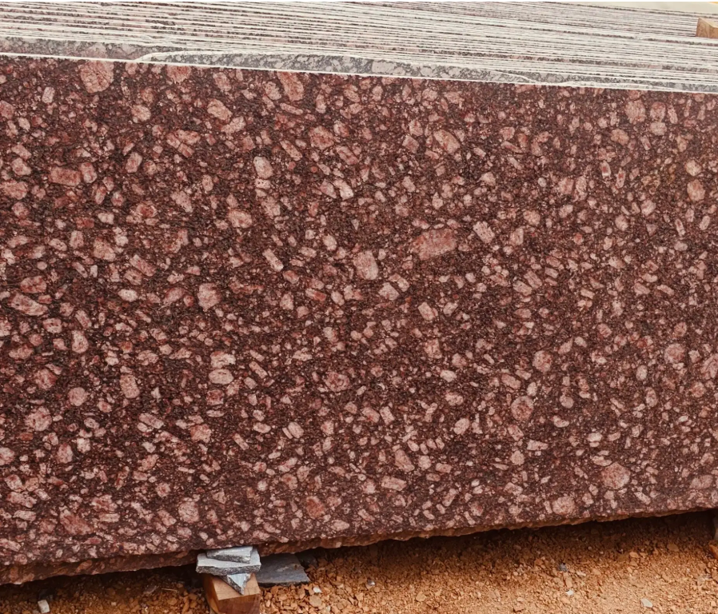

01 / BLACK GALAXY GRANITE SOURCING · ONGOLE, INDIA
Good projects
start with the
right stone.
Tell us what you're looking for. We help buyers find granite options from suitable suppliers, for projects in India and overseas.
01 — 04 THE ART OF SOURCING
THOUGHTFULLY SOURCED ✦Guided by your requirements.
Illustrative image01 SHARE YOUR REQUIREMENTS02 EXPLORE SUPPLIER OPTIONS03 DISCUSS YOUR QUOTE
01 / THE COLLECTION
Find your kind
of granite.
From deep, dramatic blacks to softer greys and warm browns, explore varieties for your next project. Availability is confirmed on enquiry.

02 / BLACK PEARL03 / ABSOLUTE BLACK

04 / STEEL GREYGranite photographs are illustrative. Please confirm the exact variety and available slab before ordering.
MORE TO EXPLORE
A wider palette,
more possibilities.
Enquire about these and other varieties. We can discuss current availability with suppliers.
Black GraniteTan BrownAlaska WhiteP-WhiteHassan GreenVizag BlueColonial WhiteRiver WhiteCoffee BrownMoon WhiteCrystal YellowRajasthan BlackImperial Red
02 / OUR APPROACH
Your sourcing
partner, from
the start.
SimAaryan Stones is an independent granite sourcing intermediary based in Ongole. We connect buyers with suitable suppliers and help clarify the details that matter before an order is agreed.
Start a conversation ↗01
Tell us about your project
Share the variety, format, dimensions, finish, quantity and destination you have in mind.
02
We explore supplier options
We discuss your requirement with suitable suppliers and check what may be available.
03
Review the details
Discuss material, quotation and next steps. Samples or inspections can be discussed for your order.
04
Agree on the way forward
Buyer and supplier confirm payment, packing, transport and other responsibilities before proceeding.
03 / SLABS & TILES
The details make
the difference.
Every project has its own specification. Enquire about granite slabs and tiles in the dimensions and thickness your project requires. Availability is confirmed with the supplier.
Discuss your requirements ↗01Format
Slabs or tiles, based on enquiry
02Dimensions
Length × breadth to be discussed
03Thickness & finish
Specify what your project needs
04Natural variation
Review the actual stone before ordering
04 / THE GALLERY
Ideas shaped
by stone.
Explore granite slabs, natural textures and stone sourcing through the photographs below.


Natural stone varies in colour and pattern. Ask us to confirm the material and availability for your enquiry.
OUR PHOTOGRAPHS
From our gallery
For a particular requirement, ask to review the actual material available.
Loading gallery…
GRANITE APPLICATIONS
Granite for
every surface.
From a kitchen counter to a commercial interior, explore natural stone for the details that bring a project together.
Kitchen countertops
Explore slabs for kitchen worktops and islands.
Flooring
Discuss granite slabs or tiles for residential and commercial spaces.
Wall cladding
Add natural texture to interior or exterior walls.
Stairs & steps
Enquire about stone for stair treads, risers and landings.
Bathroom vanities
Explore stone for vanity tops and bathroom surfaces.
Window sills
Discuss dimensions and finishes for sills and ledges.
Tabletops
Consider natural stone for dining tables and feature furniture.
Outdoor spaces
Enquire about suitable finishes for paving and exterior areas.
Suitability, finish, dimensions and availability depend on the stone and project; confirm your requirements before ordering.
05 / WHO WE WORK WITH
From an idea to
a finished space.
Whether you're sourcing for a single project or exploring a larger requirement, start by telling us what you need.
01 / PROJECTS
Builders & designers
Explore granite for flooring, countertops, stairs, cladding and architectural details.
02 / TRADE
Dealers & exporters
Discuss variety, quantity, slab format, specifications and your destination.
03 / HOME
Homeowners
Share your plans, preferred colour and approximate requirements to begin the conversation.
BUSINESS DETAILS
Confidence at
every step.
SimAaryan Stones has served customers since 2009. Contact us if you would like to discuss our business registration details.
✦
REGISTERED BUSINESSSIM AARYAN STONES · INDIA
GSTGST RegisteredAndhra Pradesh✓
MSMEMSME / UdyamIndia✓
SHOPShops & EstablishmentsAndhra Pradesh✓
LICTrade LicenceOngole Municipality✓
✦ SERVING CUSTOMERS SINCE 2009 · ONGOLE, AP
CLIENT REVIEWS
Built on conversations,
shaped by trust.
Your experience matters to us. If we have worked together, we would love to hear about your granite sourcing journey.
Share your experience
Tell us about your project and, with your permission, we may feature your feedback here.
Email your feedback ↗ OUR REGION
Close to the
source.
Based in Ongole, Andhra Pradesh, we help connect buyers with granite suppliers. Explore the Chimakurthy area in Prakasam district on the map.
Chimakurthy, Andhra PradeshThe pin marks the Chimakurthy area, not the business's exact address.
Open in Google Maps ↗Map provided by Google Maps.
06 / GOOD TO KNOW
Questions,
answered.
Need a little more detail? We're happy to discuss your requirement.
Which granite varieties can I enquire about?
Ask us about Black Galaxy, Black Pearl, Absolute Black, Steel Grey and the other varieties shown above. Availability is confirmed for each enquiry.
Do you own a granite factory?
SimAaryan Stones is an independent sourcing intermediary. We help connect buyers with suitable suppliers.
What sizes and thicknesses are available?
These vary by stone and supplier. Share your required length, breadth and thickness, with units, and we'll check available options.
Do you work with overseas buyers?
We welcome overseas enquiries. Tell us your destination country or port; packing, documentation and transport are discussed per order.
Can I see the actual stone before ordering?
Ask about photographs, samples or inspection for your enquiry. Natural stone varies, so confirm the actual material and arrangements before ordering.
07 / GET IN TOUCH
Let's find the
right stone.
Tell us about your project and the granite you need. We'll take the conversation from there.
WHATSAPP / PHONE+91 81061 77797 ↗EMAILsimaaryanstones@gmail.com ↗BASED INOngole, Andhra Pradesh, India
Tell us what you need
Fill in the details, then choose how you'd like to contact us.